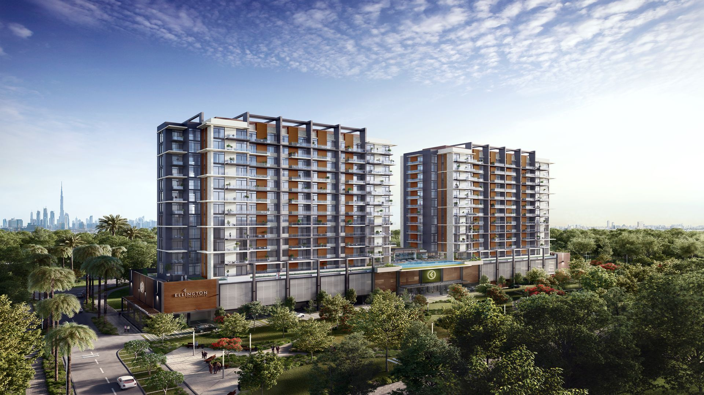

Wilton Park Residences is a 12-storied residential twin towers connected by one linear podium with spacious lobby and outside pool terrace. Located in Downtown Dubai, the development provides a convenient access to Dubai Mall and Burj Khalifa.